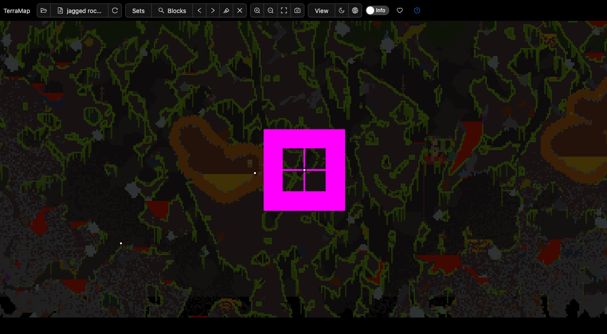

TerraMap
TerraMapHow to find Life Crystals in Terraria
Each Life Crystal raises your maximum life by 20, up to 400. That takes 15 crystals, and finding them by digging around can take hours. TerraMap shows you every one in your world.
Where Life Crystals are
- Mostly in the Cavern layer. In the worlds we checked, about 9 in 10 were in the Cavern layer and the rest in the Underground layer just above it.
- All across the world, so there are usually some close to your spawn point.
- There are plenty. Even a small world has dozens, far more than the 15 you need.
Break one with a pickaxe to pick it up, then use it to raise your maximum life.
Find them with TerraMap
- Open TerraMap and open your world with Open World File, or drag your
.wldfile onto the page. Not sure where it is? See where Terraria world files are saved. - Choose Sets → Life Crystals & Fruit.
- Press H (Highlight All). Everything else dims, and every Life Crystal shows as a small bright dot.
- Press S (Go To Spawn), then N (Find Next) to jump to the nearest crystals to the east of spawn, or P (Find Previous) for the ones to the west.
- Press I to open the Info pane and see each crystal's location, in the same format as the in-game Compass and Depth Meter.

Tip: Click anywhere on the map to start Find Next from that spot, such as near a cave you've already dug into.
Want to avoid spoilers? Open your Terraria folder with Folder and choose a character, and TerraMap only finds crystals in places that character has explored.
After 400 life: Life Fruit
Once you've defeated a mechanical boss in Hardmode, Life Fruit starts growing in the underground Jungle. Each one adds 5 more maximum life, up to 500. The same Life Crystals & Fruit set finds them too, so open your world again later and highlight the Jungle.